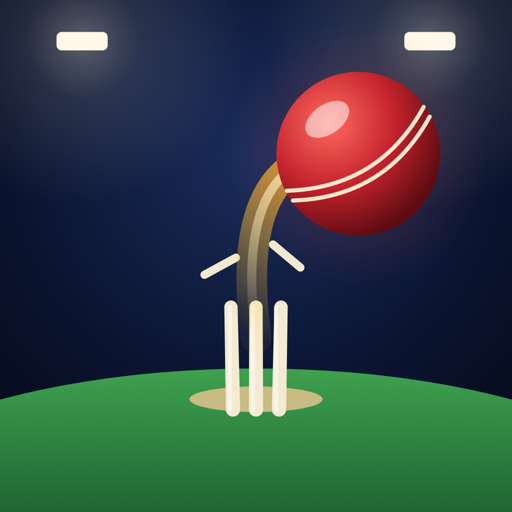

Super Over privacy policy
Last updated: 12 November 2026
Super Over doesn't collect, store on a server, share or sell any information about you. There are no accounts, no analytics, no advertising and no tracking of any kind. The iPhone and iPad app never connects to the internet. In the browser version, a match online connects your device to your opponent's: what that involves is set out below.
What stays on your device
Super Over keeps only these, on your device:
- your coins, tour stars, records and the players you've signed and upgraded;
- your team's name and colours, and your batting order;
- your settings (sound, haptics, speed units, tips, replays, iPhone Duo page).
In the app, removing it removes them; if you use iCloud or Finder backups, your device backup includes this data like any other app's. In the browser version, they're kept in your browser's local storage for this site, and clearing the site's data removes them.
The browser version
The browser version is served by GitHub Pages and loads only its own files from this site. It sets no cookies and sends nothing back. GitHub, as the host, may log technical details of requests (such as IP addresses) to run and secure its service; see GitHub's privacy statement.
Online matches (browser version)
Nothing here happens unless you choose Play Online. When you do:
- To find your opponent, your browser contacts a matchmaking service: the public server of the open-source
PeerJS project (
0.peerjs.com). It learns your IP address, a random connection id made for that session and, when you play a friend, the four-letter match code. Super Over doesn't run this server and sends it nothing else. - The match itself runs over a direct connection between your browser and your opponent's (WebRTC). To set that up, your browser also contacts a Google STUN server and, where a direct connection isn't possible, relays the match through a PeerJS TURN server. As with any direct connection, your opponent's device and these servers can see your IP address.
- Your opponent's device is sent your team's name and colours, what you do in the match (the deliveries you bowl, the strokes you play), and the reactions you tap. None of it is stored anywhere by Super Over: it's gone when the match ends, apart from the win, the coins and the record each of you keeps on your own device.
Your team's name is whatever you type, so don't put anything in it you wouldn't want an opponent to read.
Device features
- Touch is read only while you play.
- Haptics (in the app) play the bat, the stumps, catches and boundaries.
- Sound plays through your device's speaker or headphones, and mixes with other audio.
Children
Super Over is rated 4+ and collects nothing from anyone, children included. Online matches in the browser version connect players to each other as described above; there's no chat, only four fixed reactions.
Changes and contact
If this policy changes, the new version will be posted here with a new date. Questions about privacy: open an issue.